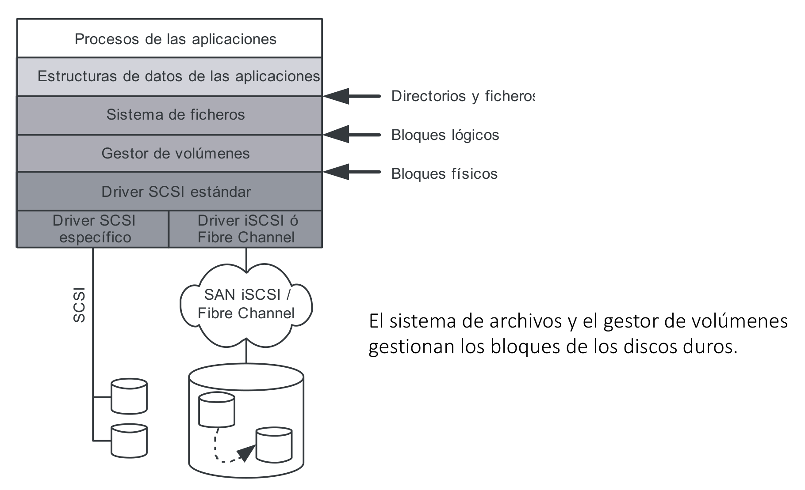
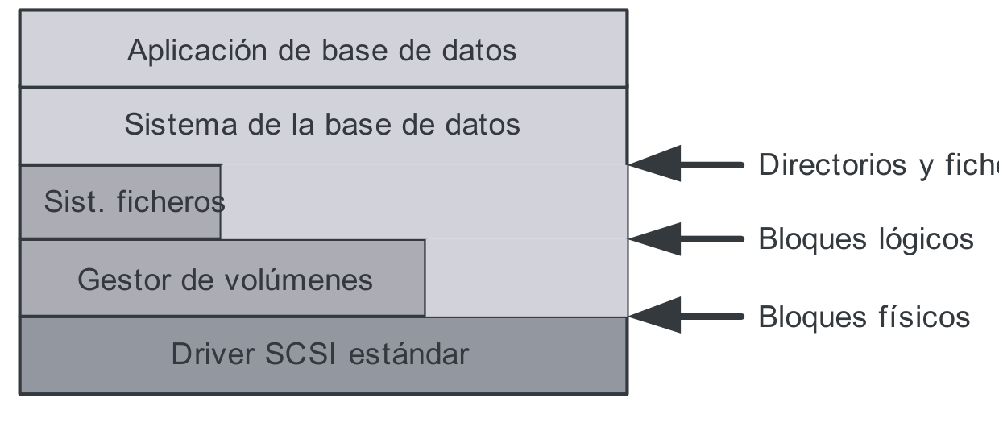
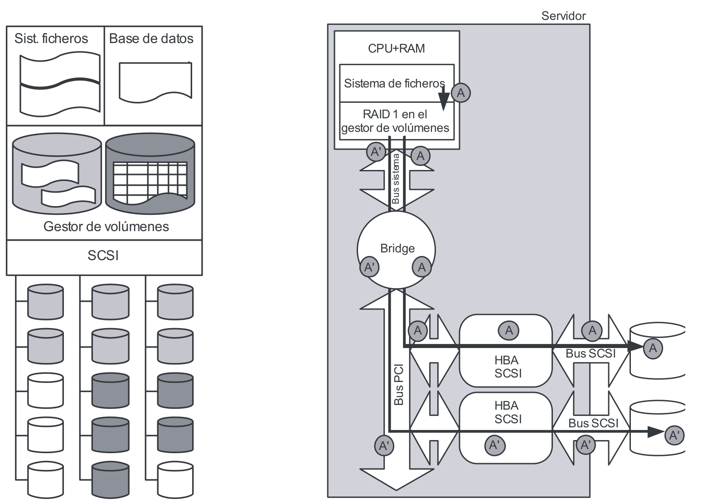
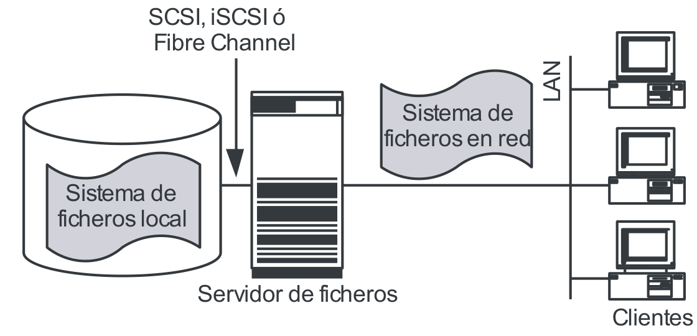
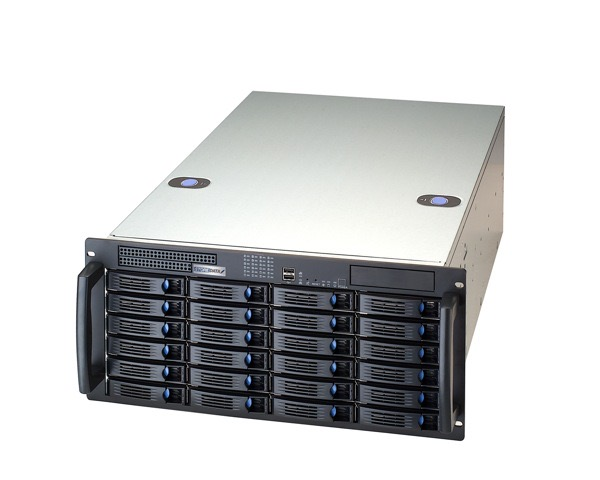
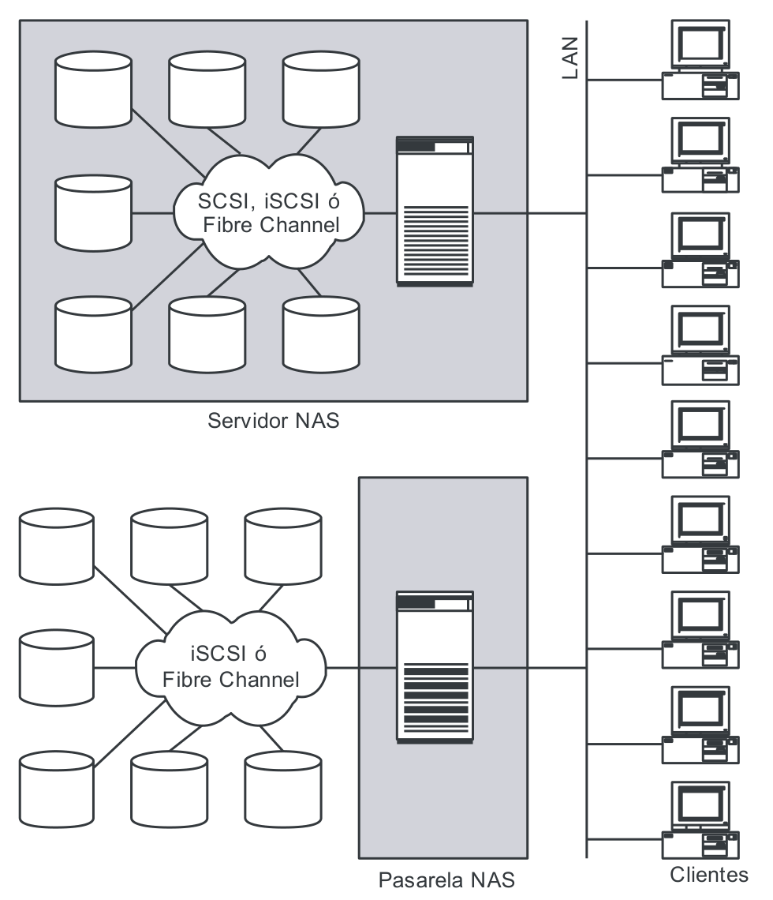
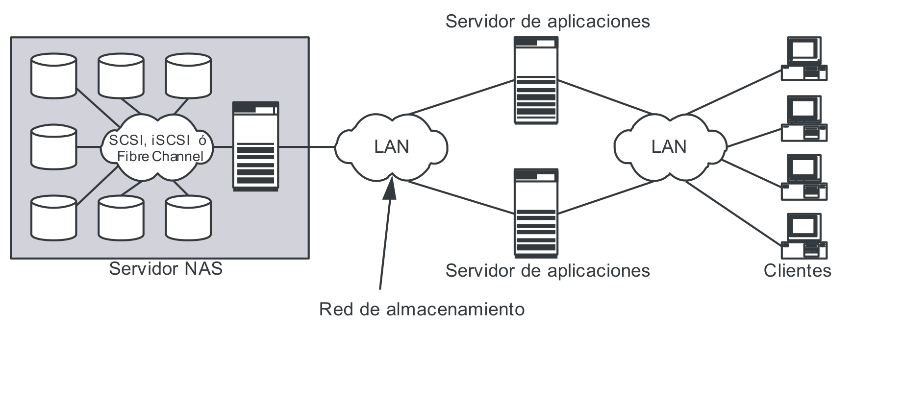
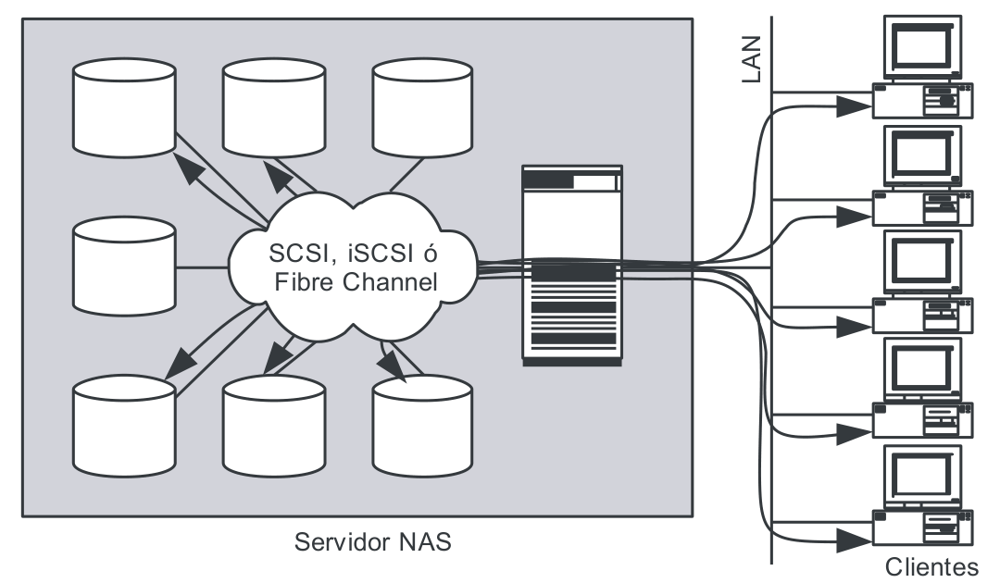
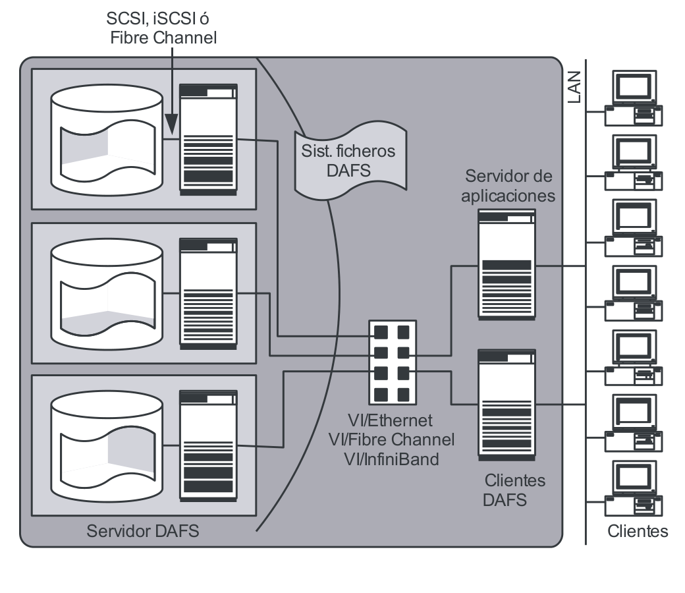
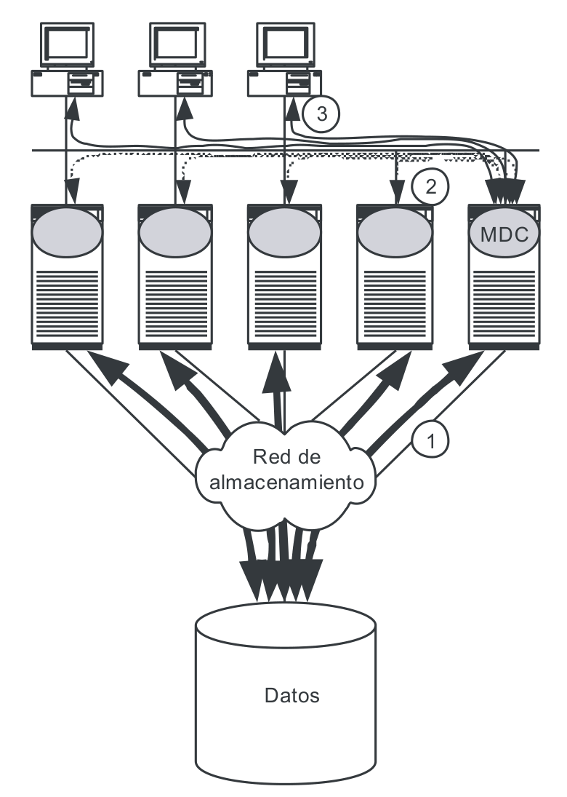

Sistemas de ficheros y almacenamiento en red
Temas de ENCO · 8/13
- 1. Formatos de Servidores - Racks y Blades
- 2. Centros de Procesamiento de Datos (CPDs)
- 3. Virtualización de Servidores
- 4. Dispositivos de Almacenamiento
- 5. Subsistemas de Disco
- 6. Fibre Channel y redes SAN
- 7. Almacenamiento IP
- 8. Sistemas de ficheros y almacenamiento en red
- 9. Virtualización del almacenamiento
- 10. Backup
- 11. Backup en red y software para backup
- 12. Archivado de la información
- 13. Hardware para backup
8.1 Almacenamiento en red: bloques frente a ficheros
Hay tres formas de ofrecer almacenamiento por red, que se distinguen por qué se comparte y dónde vive el sistema de ficheros:
- Subsistemas de disco: actúan como servidores de discos (temas 4–5).
- Redes de almacenamiento (SAN): acceso a nivel de bloque. El sistema de ficheros reside en el servidor que usa los discos.
- Servidores de ficheros: acceso a nivel de fichero. El sistema de ficheros reside en el dispositivo de almacenamiento en red. Son válidos para compartir ficheros, se ponen en marcha de forma muy sencilla, pero su escalabilidad es problemática.
8.2 Sistemas de ficheros locales
En un servidor, los datos bajan por una pila de capas: los procesos y sus estructuras de datos trabajan con directorios y ficheros; el sistema de ficheros los traduce a bloques lógicos; el gestor de volúmenes los traduce a bloques físicos; y los drivers (SCSI estándar, SCSI específico o iSCSI/Fibre Channel) los llevan al disco local o a la SAN. Es decir, el sistema de ficheros y el gestor de volúmenes gestionan los bloques de los discos.

Algunas bases de datos se saltan el sistema de ficheros (e incluso el gestor de volúmenes) y gestionan los bloques ellas mismas para ganar rendimiento.

8.2.1 Funciones avanzadas
- Journaling: un log de todas las operaciones en curso hasta que terminan. Tras un cuelgue, permite recomponer el sistema de ficheros.
- Snapshots: parecidas a las copias instantáneas de los subsistemas de disco, pero las hace el servidor. Cargan los buses y el procesador, aunque no necesitan hardware especial porque son software.
- Gestor de volúmenes (volume manager): capa intermedia entre el sistema de ficheros y los discos. Permite integrar varios discos físicos en un sistema de ficheros, crear discos virtuales a partir de los físicos y ofrece funciones como RAID y snapshots. A cambio, sobrecarga la CPU y los buses.

Con RAID 1 en el gestor de volúmenes, cada bloque A se escribe dos veces (A y A'): viaja por el bus del sistema y el PCI hasta dos HBA SCSI y dos discos. Por eso este RAID por software carga los buses.Analogía
El journaling es la libreta de un camarero: apunta cada pedido antes de llevarlo a cocina. Si se va la luz a mitad de servicio, mirando la libreta sabe qué quedó a medias.
8.3 Sistemas de ficheros en red
Extienden el concepto de sistema de ficheros a la red. Los dos más conocidos son NFS (Network File System) y CIFS (Common Internet File System), también llamado SMB (Server Message Block).
El servidor exporta parte de su sistema de ficheros y los clientes acceden a él de forma compartida; en el cliente, el sistema de ficheros montado se integra con el propio (aparece como una carpeta más). Son muy interesantes para compartir datos, pero su rendimiento es menor que DAS o SAN.

Para entenderlo mejor
Network File System — Wikipedia — funcionamiento y versiones de NFS (artículo).
8.4 NAS (Network Attached Storage)
Un NAS es un equipo con uno o más servidores internos, una serie de discos preconfigurados y un sistema operativo mínimo con funciones específicas para gestionar los discos. Es, en esencia, un servidor de ficheros "empaquetado" que se enchufa a la LAN.

Hay dos variantes: el servidor NAS con sus propios discos (conectados internamente por SCSI, iSCSI o FC) y la pasarela NAS (NAS gateway), que no tiene discos propios sino que usa los de una SAN por iSCSI o FC y los ofrece como ficheros a la LAN.

| Ventajas | Desventajas |
|---|---|
| Conexión simple a la red (normalmente Ethernet) | Por lo general no se puede ampliar: viene lleno de discos |
| Compartir ficheros entre los equipos de la red | Se escala añadiendo NAS nuevos, no aumentando la capacidad de los existentes |
| Fácil de instalar y configurar | Con el tiempo hay decenas de NAS que administrar uno a uno: más costes de administración y más errores |
| Barato; se amplía comprando y conectando otro NAS |
Es conveniente separar la red local de los clientes de la red que usan los servidores de aplicaciones para acceder al NAS, para que el tráfico de almacenamiento no sature la LAN.

Además de compartir ficheros, un NAS suele ofrecer backup, snapshots, mirroring remoto y, en entornos SOHO (Small Office/Home Office), funciones de servidor web, de correo, de impresoras o agentes P2P.
Para entenderlo mejor
DAS vs NAS vs SAN: Almacenamiento explicado en 3 minutos — las tres arquitecturas en un vistazo (vídeo, 3:31).
8.4.1 Rendimiento limitado de los servidores de ficheros
Los protocolos de ficheros no son lo bastante potentes para aplicaciones con E/S intensiva. Los cuellos de botella son los buses del servidor y TCP/IP:
- En cada petición, los datos pasan dos veces por el bus del sistema y el bus PCI del servidor de ficheros (del disco a memoria y de memoria a la tarjeta de red).
- Overhead de TCP/IP, que se puede aliviar con TOE (TCP Offload Engine) o sustituyendo TCP/IP por RDMA.

8.4.2 DAFS (Direct Access File System)
DAFS es un sistema de ficheros en red que usa RDMA (vía VIA, ver tema 7) mapeado sobre Ethernet, Fibre Channel o InfiniBand. Admite múltiples servidores, y la comunicación entre el cliente DAFS y el servidor DAFS se hace por RDMA, evitando la doble copia por los buses y el overhead de TCP/IP.

8.5 Sistemas de ficheros de discos compartidos
La idea es que varios servidores accedan a la vez al mismo sistema de ficheros a través de una red de almacenamiento. Así la carga de acceder al almacenamiento se reparte entre varios servidores. Hace falta sincronizar los servidores para mantener la consistencia (quién escribe qué y dónde), lo que puede hacerse por la LAN, normalmente con un servidor de metadatos (MDC, metadata controller). Ejemplo: GPFS (General Parallel File System) de IBM.

Todos los servidores leen y escriben los datos directamente por la red de almacenamiento, mientras el MDC coordina por la LAN los metadatos para que no se pisen.8.6 Comparativas
8.6.1 Pilas de protocolos
Si se dibujan las pilas de cada opción, la diferencia clave está en qué viaja por la red y dónde está el sistema de ficheros:
- Directo (DAS): aplicación → sistema de ficheros → gestor de volúmenes → SCSI → HBA SCSI → bus SCSI → disco. Todo en el servidor.
- Fibre Channel / FCoE / iSCSI (SAN): igual hasta SCSI, pero el SCSI viaja como FCP sobre FC, como FCP sobre FCoE (Ethernet + DCB, con CNA) o como iSCSI sobre TCP/IP. El sistema de ficheros sigue en el servidor.
- NAS (con SCSI o con iSCSI): en el cliente solo hay aplicación → cliente NFS → TCP/IP → Ethernet. El servidor NFS, el sistema de ficheros y el gestor de volúmenes están en el NAS, que a su vez habla SCSI o iSCSI con sus discos.
8.6.2 Fibre Channel, FCoE, iSCSI y NAS
| Fibre Channel | FCoE | iSCSI | NAS | |
|---|---|---|---|---|
| Protocolo | FCP (SCSI) | FCP (SCSI) | iSCSI (SCSI) | NFS, CIFS, HTTP, TCP/IP |
| Red | Fibre Channel | DCB Ethernet | TCP/IP | TCP/IP |
| Fuente/objetivo | Servidor / almacenamiento | Servidor / almacenamiento | Servidor / almacenamiento | Cliente o servidor de aplicaciones / servidor NAS |
| Objetos transferidos | Bloques | Bloques | Bloques | Ficheros o fragmentos |
| Acceso al dispositivo | Directo por FC | Directo por FC | Directo por iSCSI | Indirecto, a través del servidor interno del NAS |
| Incluye sistema de ficheros | No | No | No | Sí |
| Tasa de acierto | 40 % | 40 % | 40 % | 100 % |
| Configuración | Por el usuario | Por el usuario | Por el usuario | Por el fabricante (plug & play) |
| Apropiado para BD | Sí | Sí | Parcialmente | Parcialmente |
| Listo para usar | Sí | Introduciéndose | Sí | Sí |
note
La fila "tasa de acierto" (40 % / 100 %) aparece así en las diapositivas sin más explicación.
8.6.3 DAS frente a SAN
| DAS | SAN | |
|---|---|---|
| Escalabilidad | Añadir o quitar dispositivos de un servidor es complejo y caro | Sencillo; conectividad total; el administrador cambia con facilidad el espacio asignado a cada servidor |
| Uso de recursos del host | El host dedica recursos a aplicaciones, E/S, transferencias y backups | La E/S y el almacenamiento los hace la SAN; el host solo ejecuta SO y aplicaciones |
| Disponibilidad | Dispositivos ligados a 1 o 2 servidores: si caen, datos inaccesibles | Varios servidores y varias rutas por servidor: aunque fallen varios, otros acceden |
| Consolidación | No hay: cada servidor con sus dispositivos | Grandes dispositivos compartidos y particionados entre servidores |
| Coste de administración | Caro y lento: cada "isla de almacenamiento" se gestiona por separado | Todo en una red: administración más simple y barata |
| Distancia | Limitada por el cable: 25 m en SCSI; sin límite en iSCSI | 10 km con FC sobre fibra monomodo; más con FC sobre IP |
| Fiabilidad | Interferencias electromagnéticas en cobre | Sin interferencias con fibra óptica |
| Nº de dispositivos | 7 o 15 por controladora SCSI | 126 nodos en FC-AL y 16 millones en fabrics |
8.6.4 NAS frente a SAN
| NAS | SAN | |
|---|---|---|
| Red | Redes TCP/IP estándar (de Ethernet a ATM) | Red específica Fibre Channel (IP es una opción menos eficiente) |
| Diseño | Es un producto físico | Es una arquitectura |
| Protocolos | Cualquier host accede por HTTP, FTP, CIFS o NFS | SCSI encapsulado (FCP) |
| Rendimiento | Latencia elevada por TCP/IP | Protocolo sencillo y latencia baja |
| Conexiones | Acceso a ficheros por conexión indirecta y compartida (routed) | El servidor accede a un volumen por conexión directa (switched) |
| Nivel de acceso | Fichero: el NAS gestiona permisos de ficheros y directorios y el bloqueo de ficheros | Bloque: se transfieren bloques de disco individuales |
| Sistema de ficheros | Lo gestiona el NAS (cabecera o pasarela) | Lo crean y gestionan los servidores |
| Compatibilidad entre plataformas | Comparte ficheros simultáneamente entre distintos SO | Depende del SO de los servidores: limitada o nula |
Analogía
Un NAS es una biblioteca: pides un libro por su título y el bibliotecario (el sistema de ficheros del NAS) te lo da; cualquiera puede ir, sea del idioma que sea. Una SAN es un almacén de piezas numeradas: tu propio taller (el servidor, con su sistema de ficheros) pide "la caja 4.512" y sabe montar con ellas lo que necesite, pero las cajas solo tienen sentido para quien conoce el plano.
8.6.5 Ventajas de la SAN según la aplicación
| Aplicación | Por qué conviene una SAN |
|---|---|
| Edición y distribución de vídeo | Ficheros enormes creados y editados en tiempo real por varios usuarios y servidores, incluso lejos: la SAN da alta velocidad y grandes arrays RAID |
| Software de clustering | Necesita conectividad total y arbitraria entre servidores y dispositivos, y añadir o quitar dispositivos sin apagar los servidores |
| Disaster recovery | Automatiza el backup y tiene los datos en un CPD remoto; su gran ancho de banda permite replicar rápido y lejos con fibra |
| Conexiones redundantes | Varios links a cada dispositivo para balancear carga o tolerar fallos |
| Backup | Copia directamente de discos a cintas sin cargar a los clientes ni a la LAN |
8.7 Almacenamiento de objetos (object storage)
Es un recién llegado. Los primeros trabajos (Carnegie-Mellon y Replicus) buscaban abstraer la gestión del almacenamiento de sistemas muy estructurados e inflexibles. Conceptualmente:
- Permite guardar muchísimos metadatos por objeto, y con ellos aplicar políticas (compresión, jerarquización…) y hacer búsquedas en configuraciones a muy gran escala.
- Es flexible: admite además acceso a nivel de fichero o de bloque.
¿Por qué tiene sentido? Hoy la mayoría de los datos se mueven sin modificarse (web, fotos, películas). Si no hay que alterar bloques, los datos estáticos pueden tratarse como una entidad: un objeto, y los objetos son más fáciles de manejar en grandes cantidades que bloques o ficheros.
Funcionamiento:
- Se usa hashing para crear un ID para cada archivo, y ese hash determina dónde se almacena. Por ejemplo, Ceph (open source) usa el algoritmo CRUSH (Controlled Replication Under Scalable Hashing).
- Los objetos se guardan sobre un sistema de ficheros estándar (ext4, BTRFS, ZFS…), pero sin árboles de directorios: todos los archivos están al mismo nivel, indexados por su ID. El espacio solo está limitado por el número de IDs únicos.
- Decidida la ubicación, los datos del objeto se dividen en trozos de 64 KB y se almacenan, con réplicas en otros nodos.
Analogía
Un sistema de ficheros es un archivo con cajones y carpetas: para encontrar algo sigues la ruta. El almacenamiento de objetos es un guardarropa con tickets: entregas el abrigo, te dan un número (el ID/hash) y con ese número lo recuperas, sin importar en qué percha esté.
Para entenderlo mejor
Ceph Architecture — cómo Ceph reparte objetos con CRUSH y los replica (artículo, inglés).
8.x Ideas clave
- SAN = bloques, sistema de ficheros en el servidor; servidor de ficheros/NAS = ficheros, sistema de ficheros en el dispositivo.
- Pila local: ficheros → sistema de ficheros → bloques lógicos → gestor de volúmenes → bloques físicos → drivers. Algunas BD se saltan el sistema de ficheros.
- Funciones avanzadas: journaling, snapshots por software, gestor de volúmenes (agrupar discos, discos virtuales, RAID, snapshots; carga CPU y buses).
- Ficheros en red: NFS, CIFS/SMB; el servidor exporta y el cliente monta; menos rendimiento que DAS/SAN.
- NAS: servidores + discos preconfigurados + SO mínimo; servidor NAS o pasarela NAS. Simple, barato, comparte ficheros; no ampliable, escala a base de muchos NAS que administrar. Cuellos de botella: buses (doble paso) y TCP/IP → TOE, RDMA, DAFS.
- Discos compartidos (GPFS): varios servidores sobre el mismo sistema de ficheros por la SAN, con sincronización (MDC).
- DAS vs SAN: SAN escala, consolida, más disponible, 10 km, 16 M dispositivos. NAS vs SAN: producto vs arquitectura, fichero vs bloque, TCP/IP (latencia alta) vs FC (baja), multiplataforma vs dependiente del SO.
- Object storage: objetos con muchos metadatos, ID por hash que fija la ubicación (Ceph/CRUSH), sin directorios, trozos de 64 KB replicados.